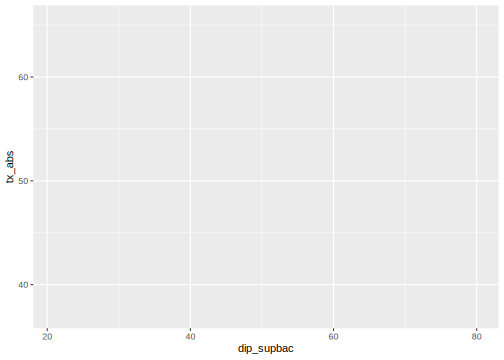
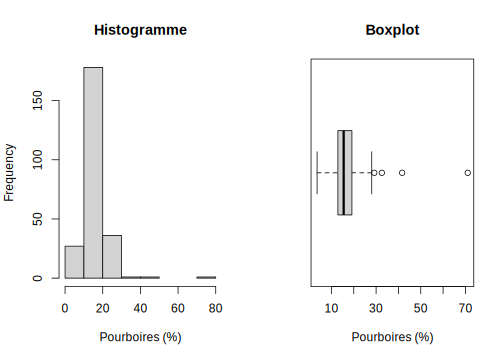
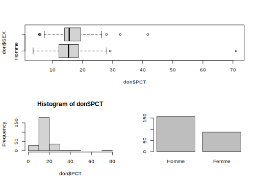
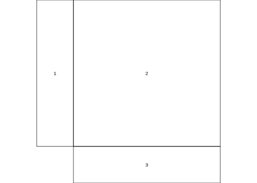
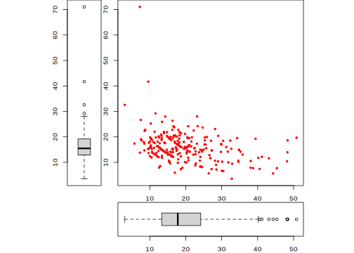
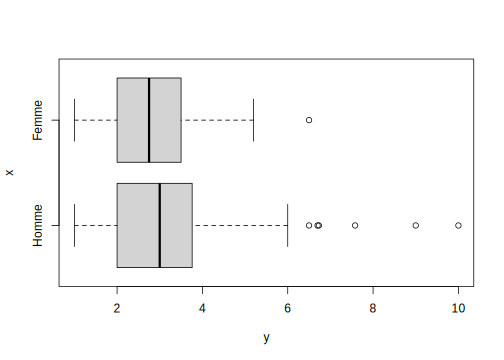
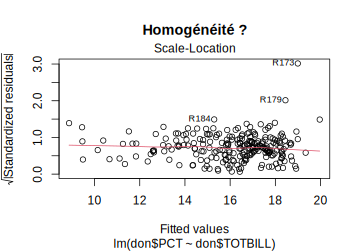
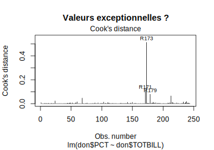
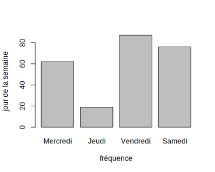

Partie 9 Graphiques avec ggplot2 (2024)

- Mise en place : Télécharger le dossier exo8 et décompressez le sur votre ordinateur. Puis ouvrez le projet R
exo8.Rprojdans Rstudio.
9.1 Introduction
9.1.1 ggplot2 et tydiverse
- ggplot2 est un package de visualisation graphique qui s’incrit dans l’écosystème plus général du tydiverse mis au point par Hadley Wickham, l’un des grands prêtres de R, responsable scientifique en chef de Rstudio.
ggplot2 est considéré actuellement comme la référence mondiale en matière de visualisation de données statistiques sous R en raison de sa puissance et de sa polyvalence.
mais son usage avancé n’est pas très facile même si les principes de base sont (relativement) simples.
ggplot2 peut fonctionner sans tidyverse mais il est probablement plus efficace lorsque l’on l’utilise à l’intérieur de son écosystème. En d’autres termes, l’apprentissage de ggplot2 est souvent couplé avec celui de tidyverse. Voir par exemple l’excellent cours de J. Barnier.
9.1.2 ggplot2 cheatsheet
- Il est recommandé d’imprimer et d’avoir toujours avec soi la ggplot2 cheatsheet qui est disponible en français.
9.2 préparation des données
9.2.1 Chargement du fichier
On charge un fichier statistique portant sur les élections européennes de 2024 par circonscriptions en France et on sélectionne quelques variables
don<-readRDS("resources/data/elect2024/elec2024_circ.RDS")
don$urb3 <- cut(don$loc_urb, breaks=c(-1,50,90,101))
levels(don$urb3) <- c("rural (<50%) ","mixte (50-90%)","urbain (>90%)")
don$tx_abs <- 100*(don$INS-don$EXP)/don$INS
don<-don[,c("ID","code_reg","nom_reg", "INS","EXP", "urb3", "dip_supbac","tx_abs")]
kable(head(don))| ID | code_reg | nom_reg | INS | EXP | urb3 | dip_supbac | tx_abs |
|---|---|---|---|---|---|---|---|
| 33004 | 75 | AQUITAINE-LIMOUSIN-POITOU-CHARENTES | 100017 | 49376 | urbain (>90%) | 34.3 | 50.63239 |
| 38001 | 84 | AUVERGNE-RHONE-ALPES | 81713 | 50493 | urbain (>90%) | 67.9 | 38.20689 |
| 59010 | 32 | NORD-PAS-DE-CALAIS-PICARDIE | 78179 | 34081 | urbain (>90%) | 33.6 | 56.40645 |
| 33007 | 75 | AQUITAINE-LIMOUSIN-POITOU-CHARENTES | 80870 | 44597 | urbain (>90%) | 55.2 | 44.85347 |
| 01001 | 84 | AUVERGNE-RHONE-ALPES | 83122 | 45120 | rural (<50%) | 33.1 | 45.71834 |
| 01002 | 84 | AUVERGNE-RHONE-ALPES | 102088 | 56962 | mixte (50-90%) | 40.0 | 44.20304 |
9.2.2 Dictionaire des variables
Nous n’utiliserons ici que quelques variables
- ID : Code de la circonscription
- code_reg : code de la région
- nom_reg : nom de la région
- INS : nombre d’inscrits
- EXP : nombre de suffrages exprimés
- urb3 : typologie des circonscriptions
- dip_supbac : % actifs diplômés > bac
- tx_abs : taux d’abstention
9.2.3 Résumé de l’ensemble du tableau
summary(don)
#> ID code_reg nom_reg INS
#> Length:535 Length:535 Length:535 Min. : 33901
#> Class :character Class :character Class :character 1st Qu.: 75148
#> Mode :character Mode :character Mode :character Median : 84248
#> Mean : 85422
#> 3rd Qu.: 96414
#> Max. :147319
#> EXP urb3 dip_supbac tx_abs
#> Min. :15577 rural (<50%) :183 Min. :21.00 Min. :37.22
#> 1st Qu.:38112 mixte (50-90%):174 1st Qu.:30.75 1st Qu.:44.77
#> Median :44568 urbain (>90%) :178 Median :35.70 Median :47.25
#> Mean :44957 Mean :39.40 Mean :47.54
#> 3rd Qu.:51238 3rd Qu.:44.55 3rd Qu.:49.94
#> Max. :82024 Max. :80.10 Max. :65.489.3 Principes généraux
On commence par charger le package ggplot2 qui est une partie de l’univers tidyverse mais que l’on peut utiliser indépendamment du reste de l’empire d’Hadley Wickham…
9.3.1 Les différentes étapes
- la commande ggplot(data) initie la création du graphique.
- la commande aes() qui est l’abrévation de aesthetics définit les paramètres généraux de l’ensemble du graphique et comporte en général
- x = variable liée à l’axe horizontal
- y= variable liée à l’axe vertical
- colour= : variable définissant des groupes / couleur
- shape= : variable définissant des groupes / forme
- la commande geom_xxx crée un graphique de type xxx
- les commandes additionnelles scale_xxx précisent les axes
- la commande additionelle facet_xxx partitionne la figure en plusieurs
- la commande theme_xxx retouche l’ensemble des paramètres de couleur, police, épaisseur
N.B. Toutes les étapes ci-dessus ne sont pas obligatoires.
9.3.2 La figure à réaliser
Comment réaliser la figure ci-dessous ?
#> `geom_smooth()` using formula = 'y ~ x'
9.3.3 La construction pas à pas
On définit le tableau de données avec ggplot() et les variables principales avec aes()

On ajoute le type principal du graphique avec la commande geom_point()

On retouche les axes horizontaux et verticaux en les passant en logarithme et en leur donnant un titre.
ggplot(don) +
aes(x = dip_supbac) +
aes(y = tx_abs) +
geom_point() +
scale_x_continuous(name="% actifs dipl. > bac")+
scale_y_continuous(name="% abstention")
On segmente le graphique en facettes selon une ou plusieurs variables avec facet_wrap(). Du coup, on retire ces variables de l’esthétique générale :
ggplot(don) +
aes(x = dip_supbac) +
aes(y = tx_abs) +
geom_point() +
scale_x_continuous(name="% actifs dipl. > bac")+
scale_y_continuous(name="% abstention")+
facet_wrap(vars(urb3))
On ajoute dans chaque facette une droite de tendance et son intervalle de confiance avec geom_smooth(). On précise method=“lm” pour avoir une droite et non pas une courbe
ggplot(don) +
aes(x = dip_supbac) +
aes(y = tx_abs) +
geom_point() +
scale_x_continuous(name="% actifs dipl. > bac")+
scale_y_continuous(name="% abstention")+
facet_wrap(vars(urb3))+
geom_smooth(method="lm")
#> `geom_smooth()` using formula = 'y ~ x'
Onajoute un titre principal avec ggtitle() et on retouche l’ensemble de l’apparence avec theme_light().
ggplot(don) +
aes(x = dip_supbac) +
aes(y = tx_abs) +
geom_point() +
scale_x_continuous(name="% actifs dipl. > bac")+
scale_y_continuous(name="% abstention")+
facet_wrap(vars(urb3))+
geom_smooth(method="lm") +
ggtitle(label = "Relation entre taux d'abstention et diplôme par type d'espace",
subtitle = "Source : INSEE et Min. de l'Intérieur") +
theme_light()
#> `geom_smooth()` using formula = 'y ~ x'
9.3.4 Comparaison avec R-Base
La principale différence réside dans la construction séquentielle de la figure avec l’opérateur +. A tout moment on peut sauvegarder la figure au cours d’une des étapes décrites dans l’exemple. On parle de pipeline pour ce type de programme que l’on retrouve dans la manipulation de données avec tidyverse et dplyr.
La seconde différence réside dans la production rapide d’une figure de qualité graphique acceptable sans avoir besoin de spécifier les paramètres par() de R-Base.
Au total, ggplot2 s’impose actuellement comme un standard mondial autour duquel se greffent d’autres applications. Par exemple, on peut rendre interactif un graphique ggplot() en le couplant avec plotly().
Mais … ggplot2 est beaucoup moins simple qu’il n’y paraît de prime abord. Et on peut facilement s’arracher les cheveux sur certaines commandes !
9.3.5 Attention ! Paramètres aes() locaux et globaux
Une des plus grandes difficultés que l’on rencontre dans ggplot() est la manipulation du paramètre aes() qui peut renvoyer :
- soit à des paramètres globaux s’ils apparaissent dans le ggplot initial ou dans des lignes de codes isolées
- soit à des paramètres locaux, s’ils apparaissent à l’intérieur d’une fonction geom().
Deux exemples rapides pour bien comprendre
- urb3 est un paramètre global : dans ce cas il s’applique à toutes les commandes qui suivent. Il y aura donc trois droites de régression générées par geom_smooth
ggplot(don, aes(x = dip_supbac, y = tx_abs, color = urb3)) +
geom_point() +
geom_smooth(method="lm")
#> `geom_smooth()` using formula = 'y ~ x'
- SEX est un paramètre local de geom_point() : dans ce cas il n’aura pas d’effet sur geom_smooth() qui va générer une seule droite de régression.
ggplot(don, aes(x = dip_supbac, y = tx_abs)) +
geom_point(aes(color=urb3)) +
geom_smooth(method="lm", color="black")
#> `geom_smooth()` using formula = 'y ~ x'
9.4 X discrète


9.5 X quantitative continue
9.5.1 hist (R-base)
hist(don$tx_abs,breaks = 15,
col = "lightyellow",
border = "blue",
xlab="Taux d'abstention (%)",
ylab = "Nombre de circonscriptions",
main = "L'abstention aux élections européennes de 2024")
9.5.2 geom_histogram (ggplot2)
#
ggplot(don) +
aes(x =tx_abs) +
# Appel de la fonction principale
geom_histogram( bins = 15,
fill="lightyellow",
col="blue"
) +
# Retouche de l'échelle
scale_x_continuous( name = "taux d'abstention") +
scale_y_continuous(name = "Nombre de circonscriptions")+
# Ajout du titre
ggtitle("L'abstention aux élections européennes de 2024") 
9.6 X et Y quantitatives continues
9.6.1 plot (R-base)
plot(x = don$dip_supbac,
y = don$tx_abs,
cex=0,
xlab="% actifs diplômés > bac",
ylab="% abstention",
main= "Influence du diplôme sur l'abstention")
points(x=don$dip_supbac,
y=don$tx_abs,
pch=20)
abline(lm(don$tx_abs~don$dip_supbac),
col="red",
lwd=3)
9.6.2 geom_point (ggplot2)
# On définit les paramètres globaux
ggplot(don, aes(x =dip_supbac, y=tx_abs)) +
# On trace les points
geom_point() +
# On ajoute la droite de régression
geom_smooth(method = "lm", col="red") +
# On ajoute les titres
scale_x_continuous(name="% actifs diplômés > bac") +
scale_y_continuous(name="% abstention") +
ggtitle("Influence du diplôme sur l'abstention")
#> `geom_smooth()` using formula = 'y ~ x'9.7 X quantitative continue et Y discrète
9.7.1 6.1 boxplot (R-base)
boxplot(don$tx_abs~don$urb3,
col=rainbow(n=12, alpha=0.5),
xlab="type d'espace",
ylab="taux d'abstention",
main= "Typologie urbain-rural et abstention")
9.7.3 beanplot (R-base + package beanplot)
par(bg="black",fg="white",col.lab ="white", col.axis ="white",col.main="white" )
#levels(don2$SIZE)<-c("1 ou 2", "1 ou 2", "3 ou 4", "3 ou 4", "5 ou 6", "5 ou 6")
library(beanplot)
beanplot(don$tx_abs~don$urb3,
col=c("lightyellow","red"),
xlab="type d'espace",
ylab="taux d'abstention",
main= "Typologie urbain-rural et abstention")
#> log="y" selected
9.7.4 geom_violin (ggplot2)
# On définit les paramètres principaux
ggplot(don, aes(x= urb3,y = tx_abs)) +
# On ajoute les violons
geom_violin(fill="lightyellow") +
# On ajoute les points en agitant
geom_jitter(col="red")+
# On ajoute les titres
scale_x_discrete(name="typologie urbain-rural") +
scale_y_continuous(name="% abstention") +
ggtitle("Typologie urbain-rural et abstention") +
# On passe en thème "dark"
theme_dark()
9.8 Deux variables X et Y discrètes
9.8.1 mosaicplot (R-base)
mosaicplot(don$code_reg~don$urb3,
col=c("lightyellow","orange","red"),
xlab="Code de la région",
ylab="Typologie",
las=1,
main= "Circonscriptions urbaines et rurales par région")
9.8.2 geom_bar (ggplot2)
Solution simple mais pas terrible !
# On définit les paramètres principaux
ggplot(don, aes(x= code_reg, fill = urb3)) +
# On ajoute geom_bar
geom_bar() +
# On ajoute les titres
scale_x_discrete(name="Code de la région") +
ggtitle("Circonscriptions urbaines et rurales par région")
9.9 Conclusion
9.9.1 R-base
- simple d’utilisation
- peut être amélioré par des packages spécialisés
- permet de créer ses propres fonctions
- n’impose pas d’apprendre tidyverse
9.9.2 ggplot2
- standard mondial du graphisme … actuellement
- compatible avec la religion du tidyverse
- rédaction séquentielle très efficace
- mais apprentissage difficile (plusieurs semaines …)